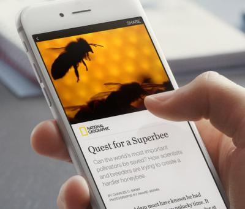

<div class="container">

  <div class="row text-left" style="margin-top: 2em;">
    <div class="col-sm-5">
      <h1>Present your blog posts as Facebook Instant Articles. <br/></h1>
      <h3>Installation</h3>
      <ul>
        <li>Go to your page -> Publishing Tools -> Instant Articles -> Configuration.</li>
        <li>Connect Your Site -> copy fb:pages content to Odoo -> Website Admin -> Settings -> FB Page ID.</li>
        <li>Register your website URL on Connect Your Site section.</li>
        <li>Create Facebook Application.</li>
        <li>Copy App ID and Secret to  Odoo -> Wesite Admin -> Settings -> FB App ID, FB App Secret.</li>
        <li>Edit Valid OAuth redirect URIs on Facebook App.</li>
        <li>Add http://yoursite.com/fb_instant_article/login_success as redirect URI.</li>
        <li>Add users to FB App Administrator roles who will be posting Article.</li>
        <li>Create Blog Post.</li>
        <li>Connect FB App.</li>
        <li>Publish to Instant Article.</li>
      </ul>
    </div>
    <div class="col-sm-7">
      
    </div>
  </div>

</div>
